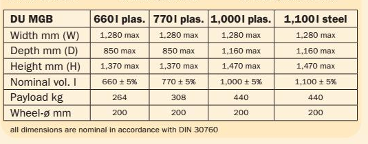

DR-002
Dokumentgjennomgang · 9. oktober 2026
Publiserte produktkataloger,
lest som vedlegg til tilbudet.
Begge katalogene over hjulbeholdere som Namdal Ressurs publiserer — SSI Schäfer og Craemer — er lest mot kravspesifikasjonen i Bilag 2. Ingenting her er en poengsetting. Det er oppdragsgiver som gir poeng.
Metode
Bilag 2 stiller seksti nummererte krav. Tjueseks gjelder leveranseplan, opsjonspris eller reklamasjonsprosedyre, som ingen katalog besvarer. Trettifire gjenstår.
Besvart betyr at en leser kan kontrollere det i dag. Delvis betyr at temaet er nevnt uten at noe forplikter. Mangler betyr at det ikke finnes noe å peke på.
Resultatet
Fem av
trettifire
kan
besvares.
Krav 1, 7, 11, 13, 24. Fabrikat, mål, de tohjuls størrelsene, utskiftbare lokk.
Krav 2–6, 8–10, 14, 15, 17, 18, 22, 23, 26, 27, 41, 46. Nevnt, aldri forpliktet.
Krav 12, 16, 19–21, 25, 28, 47, 57, 58, 60. Intet om PCR, reservedeler eller REACH.
Tjueåtte av de trettifire ber leverandøren bekrefte eller beskrive. Dette er hva en evaluator kan kontrollere i det publiserte materialet bak de svarene.
Funn / Ark 2
DR-002
Fire ting en evaluator ser først.

Funn 01 / Krav 57, A · klima 30 av 100
Én side, to materialer.
«Für die Produktion der Kunststoffbehälter kommt dabei ausschließlich sortenreines PE zum Einsatz.»
Lenger ned på siden: inntil 90 prosent resirkulert materiale og Blauer Engel på forespørsel. Den norske har ingen av delene.

Funn 02 / Krav 14 og 5, begge A
1000-literen er et annet løft.
«Beholdere på 4 hjul skal være 660L og 1000L.»
Den eneste 1000-literen på 106 sider står i serien katalogen tilbyr i stedet for kamløft, med mål etter DIN 30760.

Funn 03 / Krav 18, A
200 der kravet sier 250.
«…minimum diameter 250 mm (tohjuls) og 200 mm (firehjuls).»
80, 140 og 240 står oppført med 200 mm; bare 360-literen tilbyr 300. På de firehjuls beholderne er kravet oppfylt.

Funn 04 / Krav 2, A
Ingen av disse er et produktblad.
«Det vedlegges produktblad / brosyrer over beholderne.»
Fire sider uten et eneste mål, en vekt eller en hjuldiameter, og en generell katalog publisert i 2019.
Tallet for resirkulert materiale finnes allerede. Det står i produsentens egen tyske brosjyre og ikke i den norske.